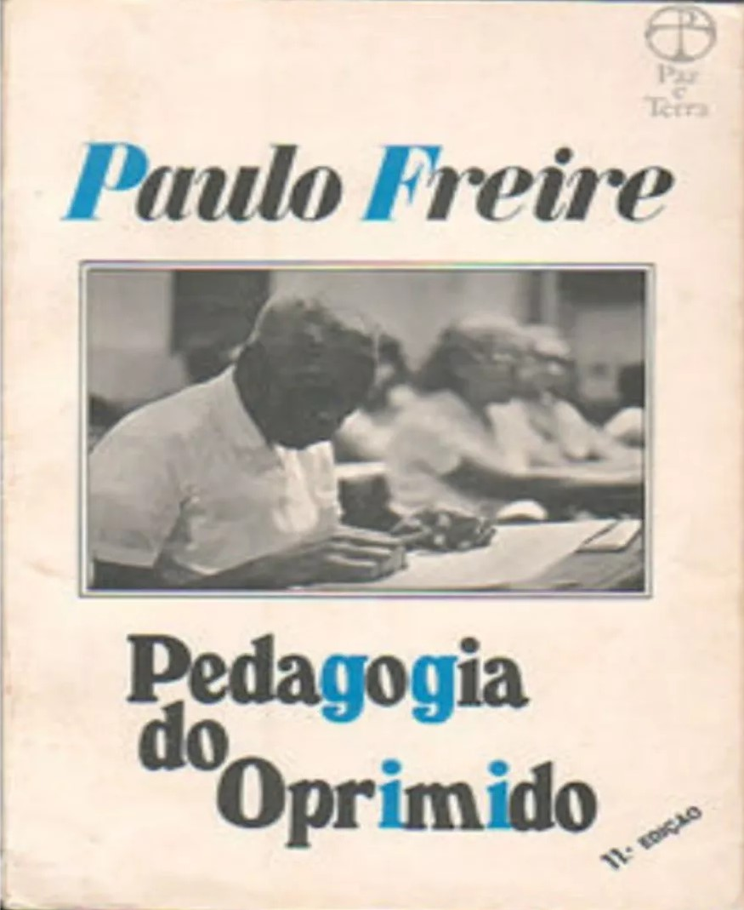
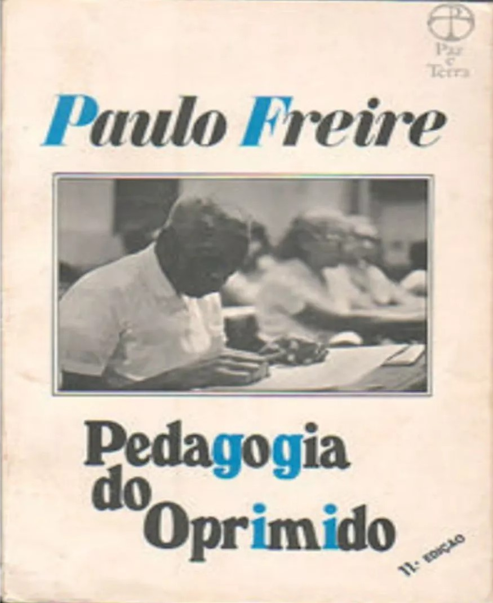

Por viabilizar a alfabetização de jovens e adultos em cerca de 40 horas e com baixos custos, o método desenvolvido por Paulo Freire inspirou o Plano Nacional de Alfabetização, que começou a ser encabeçado pelo Ministério da Educação e Cultura (MEC) durante o governo de João Goulart. Uma das principais contribuições de Paulo Freire é a sua crítica à educação tradicional, conceituada na obra “Pedagogia do Oprimido” como educação bancária.
Rejeitado pela atual administração, Paulo Freire está entre os autores mais citados em trabalhos acadêmicos do mundo. Tratada pelo governo Bolsonaro como bode expiatório da má qualidade do ensino público brasileiro, a obra do educador Paulo Freire (1921-1997) pode ser controversa. Mas o trabalho do pedagogo e filósofo, nomeado em 2012 patrono da educação brasileira e autor de um método de alfabetização que completou 50 anos em 2013, não deixa de ser bastante relevante nas discussões mundiais sobre pedagogia. Freire é estudado em universidades americanas, homenageado com escultura na Suécia, nome de centro de estudos na Finlândia e inspiração para cientistas em Kosovo. De acordo com levantamento do pesquisador Elliott Green, professor da Escola de Economia e Ciência Política de Londres, na Inglaterra, o livro fundamental da obra do educador, 'Pedagogia do Oprimido', escrito em 1968, é o terceiro mais citado em trabalhos acadêmicos na área de humanidades em todo o mundo.